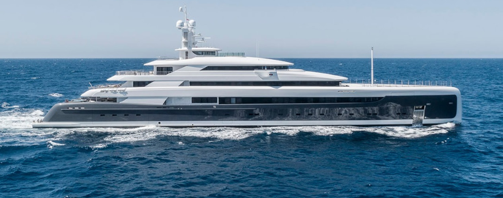

VIP Яхта № 2
Созданная в 2018 году компанией Pride Mega Yachts, Illusion Plus является крупнейшей роскошной яхтой, когда-либо спущенной на воду в Азии. Это удостоенное наград судно сочетает в себе производительность и современный дизайн. Яхта находится в идеальном состоянии — с момента ее спуска на воду использовалась непродолжительное время в частном порядке. Это уникальная возможность купить совершенно новую яхту высочайшего класса без какого-либо ожидания. Illusion Plus все еще в гарантии!
Цена: €145,000,000
Характеристики товара
- ДЛИНА: 290’4’’/88.5м
- ШИРИНА: 50’6’’/15.40м
- ТОНАЖ: 3642 GT
- ГОД ПОСТРОЙКИ: 2018
- МАКСИМАЛЬНАЯ СКОРОСТЬ: 17 узел
- КРУИЗНАЯ СКОРОСТЬ: 15 узлов
- КРУИЗНАЯ СКОРОСТЬ: 15 узлов
- КОЛИЧЕСТВО ГОСТЕЙ: 12
- КАЮТ: 8
- ЭКИПАЖ: 25
- КОРПУС: сталь
- НАДСТРОЙКА: алюминий
О яхте
Illusion Plus была создана опытной командой Pride Mega Yachts, представляет собой отличный тандем европейских дизайнеров от Rainsford Saunders Design, Azure Yacht Design & Naval Architecture и дизайном интерьера от Sinot Yacht Design. Ее дизайн был вдохновлен автомобилями Rolls-Royce, она имеет футуристический профиль с вертикальным изгибом и изящными плавными линиями. У нее сильный чартерный потенциал, удобная планировка и бесчисленные удобства, способные порадовать даже самого взыскательного клиента. Примечательные особенности включают вертолетную площадку touch and go, два огромных спа-бассейна, кинозал, салон красоты и спа.